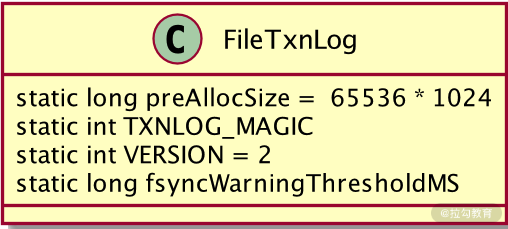

- 00 开篇词：选择 ZooKeeper，一步到位掌握分布式开发.md.html
- 01 ZooKeeper 数据模型：节点的特性与应用.md.html
- 02 发布订阅模式：如何使用 Watch 机制实现分布式通知.md.html
- 03 ACL 权限控制：如何避免未经授权的访问？.md.html
- 04 ZooKeeper 如何进行序列化？.md.html
- 05 深入分析 Jute 的底层实现原理.md.html
- 06 ZooKeeper 的网络通信协议详解.md.html
- 07 单机模式：服务器如何从初始化到对外提供服务？.md.html
- 08 集群模式：服务器如何从初始化到对外提供服务？.md.html
- 09 创建会话：避开日常开发的那些“坑”.md.html
- 10 ClientCnxn：客户端核心工作类工作原理解析.md.html
- 11 分桶策略：如何实现高效的会话管理？.md.html
- 12 服务端是如何处理一次会话请求的？.md.html
- 13 Curator：如何降低 ZooKeeper 使用的复杂性？.md.html
- 14 Leader 选举：如何保证分布式数据的一致性？.md.html
- 15 ZooKeeper 究竟是怎么选中 Leader 的？.md.html
- 16 ZooKeeper 集群中 Leader 与 Follower 的数据同步策略.md.html
- 17 集群中 Leader 的作用：事务的请求处理与调度分析.md.html
- 18 集群中 Follow 的作用：非事务请求的处理与 Leader 的选举分析.md.html
- 19 Observer 的作用与 Follow 有哪些不同？.md.html
- 20 一个运行中的 ZooKeeper 服务会产生哪些数据和文件？.md.html
- 21 ZooKeeper 分布式锁：实现和原理解析.md.html
- 22 基于 ZooKeeper 命名服务的应用：分布式 ID 生成器.md.html
- 23 使用 ZooKeeper 实现负载均衡服务器功能.md.html
- 24 ZooKeeper 在 Kafka 和 Dubbo 中的工业级实现案例分析.md.html
- 25 如何搭建一个高可用的 ZooKeeper 生产环境？.md.html
- 26 JConsole 与四字母命令：如何监控服务器上 ZooKeeper 的运行状态？.md.html
- 27 crontab 与 PurgeTxnLog：线上系统日志清理的最佳时间和方式.md.html
- 28 彻底掌握二阶段提交三阶段提交算法原理.md.html
- 29 ZAB 协议算法：崩溃恢复和消息广播.md.html
- 30 ZAB 与 Paxos 算法的联系与区别.md.html
- 31 ZooKeeper 中二阶段提交算法的实现分析.md.html
- 32 ZooKeeper 数据存储底层实现解析.md.html
- 33 结束语 分布技术发展与 ZooKeeper 应用前景.md.html
- 捐赠
20 一个运行中的 ZooKeeper 服务会产生哪些数据和文件？
之前的课程我们都在介绍 ZooKeeper 框架能够实现的功能，而无论是什么程序，其本质就是对数据的操作。比如 MySQl 数据库操作的是数据表，Redis 数据库操作的是存储在内存中的 Key-Value 值。不同的数据格式和存储方式对系统运行的效率和处理能力都有很大影响。本课时就来学习，在 ZooKeeper 程序运行期间，都会处理哪些数据，以及他们的存储格式和存储位置。
ZooKeeper 服务提供了创建节点、添加 Watcher 监控机制、集群服务等丰富的功能。这些功能服务的实现，离不开底层数据的支持。从数据存储地点角度讲，ZooKeeper 服务产生的数据可以分为内存数据和磁盘数据。而从数据的种类和作用上来说，又可以分为事务日志数据和数据快照数据。
内存数据
首先，我们介绍一下什么是内存数据。在专栏的基础篇中，主要讲解了通过 ZooKeeper 数据节点的特性，来实现一些像发布订阅这样的功能。而这些数据节点实际上就是 ZooKeeper 在服务运行过程中所操作的数据。
我在基础篇中提到过，ZooKeeper 的数据模型可以看作一棵树形结构，而数据节点就是这棵树上的叶子节点。从数据存储的角度看，ZooKeeper 的数据模型是存储在内存中的。我们可以把 ZooKeeper 的数据模型看作是存储在内存中的数据库，而这个数据库不但存储数据的节点信息，还存储每个数据节点的 ACL 权限信息以及 stat 状态信息等。
而在底层实现中，ZooKeeper 数据模型是通过 DataTree 类来定义的。如下面的代码所示，DataTree 类定义了一个 ZooKeeper 数据的内存结构。DataTree 的内部定义类 nodes 节点类型、root 根节点信息、子节点的 WatchManager 监控信息等数据模型中的相关信息。可以说，一个 DataTree 类定义了 ZooKeeper 内存数据的逻辑结构。
public class DataTree {
private DataNode root
private final WatchManager dataWatches
private final WatchManager childWatches
private static final String rootZookeeper = "/";
}
事务日志
在介绍 ZooKeeper 集群服务的时候，我们介绍过，为了整个 ZooKeeper 集群中数据的一致性，Leader 服务器会向 ZooKeeper 集群中的其他角色服务发送数据同步信息，在接收到数据同步信息后， ZooKeeper 集群中的 Follow 和 Observer 服务器就会进行数据同步。而这两种角色服务器所接收到的信息就是 Leader 服务器的事务日志。在接收到事务日志后，并在本地服务器上执行。这种数据同步的方式，避免了直接使用实际的业务数据，减少了网络传输的开销，提升了整个 ZooKeeper 集群的执行性能。
在我们启动一个 ZooKeeper 服务器之前，首先要创建一个 zoo.cfg 文件并进行相关配置，其中有一项配置就是 dataLogDir 。在这项配置中，我们会指定该台 ZooKeeper 服务器事务日志的存放位置。
在 ZooKeeper 服务的底层实现中，是通过 FileTxnLog 类来实现事务日志的底层操作的。如下图代码所示，在 FileTxnLog 类中定义了一些属性字段，分别是：
- preAllocSize：可存储的日志文件大小。如用户不进行特殊设置，默认的大小为 65536*1024 字节。
- TXNLOG_MAGIC：设置日志文件的魔数信息为ZKLG。
- VERSION：设置日志文件的版本信息。
- lastZxidSeen：最后一次更新日志得到的 ZXID。

定义了事务日志操作的相关指标参数后，在 FileTxnLog 类中调用 static 静态代码块，来将这些配置参数进行初始化。比如读取 preAllocSize 参数分配给日志文件的空间大小等操作。
static {
LOG = LoggerFactory.getLogger(FileTxnLog.class);
String size = System.getProperty("zookeeper.preAllocSize");
if (size != null) {
try {
preAllocSize = Long.parseLong(size) * 1024;
} catch (NumberFormatException e) {
LOG.warn(size + " is not a valid value for preAllocSize");
}
}
Long fsyncWarningThreshold;
if ((fsyncWarningThreshold = Long.getLong("zookeeper.fsync.warningthresholdms")) == null)
fsyncWarningThreshold = Long.getLong("fsync.warningthresholdms", 1000);
fsyncWarningThresholdMS = fsyncWarningThreshold;
经过参数定义和日志文件的初始化创建后，在 ZooKeeper 服务器的 dataDir 路径下就生成了一个用于存储事务性操作的日志文件。我们知道在 ZooKeeper 服务运行过程中，会不断地接收和处理来自客户端的事务性会话请求，这就要求每次在处理事务性请求的时候，都要记录这些信息到事务日志中。
如下面的代码所示，在 FileTxnLog 类中，实现记录事务操作的核心方法是 append。从方法的命名中可以看出，ZooKeeper 采用末尾追加的方式来维护新的事务日志数据到日志文件中。append 方法首先会解析事务请求的头信息，并根据解析出来的 zxid 字段作为事务日志的文件名，之后设置日志的文件头信息 magic、version、dbid 以及日志文件的大小 。
public synchronized boolean append(TxnHeader hdr, Record txn)
throws IOException
{
if (hdr == null) {
return false;
}
if (hdr.getZxid() <= lastZxidSeen) {
LOG.warn("Current zxid " + hdr.getZxid()
+ " is <= " + lastZxidSeen + " for "
+ hdr.getType());
} else {
lastZxidSeen = hdr.getZxid();
}
if (logStream==null) {
if(LOG.isInfoEnabled()){
LOG.info("Creating new log file: log." +
Long.toHexString(hdr.getZxid()));
}
logFileWrite = new File(logDir, ("log." +
Long.toHexString(hdr.getZxid())));
fos = new FileOutputStream(logFileWrite);
logStream=new BufferedOutputStream(fos);
oa = BinaryOutputArchive.getArchive(logStream);
FileHeader fhdr = new FileHeader(TXNLOG_MAGIC,VERSION, dbId);
fhdr.serialize(oa, "fileheader");
// Make sure that the magic number is written before padding.
logStream.flush();
currentSize = fos.getChannel().position();
streamsToFlush.add(fos);
}
padFile(fos);
byte[] buf = Util.marshallTxnEntry(hdr, txn);
if (buf == null || buf.length == 0) {
throw new IOException("Faulty serialization for header " +
"and txn");
}
Checksum crc = makeChecksumAlgorithm();
crc.update(buf, 0, buf.length);
oa.writeLong(crc.getValue(), "txnEntryCRC");
Util.writeTxnBytes(oa, buf);
return true;
从对事务日志的底底层代码分析中可以看出，在 datadir 配置参数路径下存放着 ZooKeeper 服务器所有的事务日志，所有事务日志的命名方法都是“log.+ 该条事务会话的 zxid”。
数据快照
最后，我们来介绍 ZooKeeper 服务运行过程中产生的最后一个数据文件，即事务快照。
说到快照，可能很多技术人员都不陌生。一个快照可以看作是当前系统或软件服务运行状态和数据的副本。在 ZooKeeper 中，数据快照的作用是将内存数据结构存储到本地磁盘中。因此，从设计的角度说，数据快照与内存数据的逻辑结构一样，都使用 DataTree 结构。在 ZooKeeper 服务运行的过程中，数据快照每间隔一段时间，就会把 ZooKeeper 内存中的数据存储到磁盘中，快照文件是间隔一段时间后对内存数据的备份。
因此，与内存数据相比，快照文件的数据具有滞后性。而与上面介绍的事务日志文件一样，在创建数据快照文件时，也是使用 zxid 作为文件名称。
在代码层面，ZooKeeper 通过 FileTxnSnapLog 类来实现数据快照的相关功能。如下图所示，在FileTxnSnapLog 类的内部，最核心的方法是 save 方法，在 save 方法的内部，首先会创建数据快照文件，之后调用 FileSnap 类对内存数据进行序列化，并写入到快照文件中。
public void save(DataTree dataTree,
ConcurrentHashMap<Long, Integer> sessionsWithTimeouts,
boolean syncSnap)
throws IOException {
long lastZxid = dataTree.lastProcessedZxid;
File snapshotFile = new File(snapDir, Util.makeSnapshotName(lastZxid));
LOG.info("Snapshotting: 0x{} to {}", Long.toHexString(lastZxid),
snapshotFile);
snapLog.serialize(dataTree, sessionsWithTimeouts, snapshotFile, syncSnap);
}
总结
通过本课时的学习，我们知道在 ZooKeeper 服务的运行过程中，会涉及内存数据、事务日志、数据快照这三种数据文件。从存储位置上来说，事务日志和数据快照一样，都存储在本地磁盘上；而从业务角度来讲，内存数据就是我们创建数据节点、添加监控等请求时直接操作的数据。事务日志数据主要用于记录本地事务性会话操作，用于 ZooKeeper 集群服务器之间的数据同步。事务快照则是将内存数据持久化到本地磁盘。
这里要注意的一点是，数据快照是每间隔一段时间才把内存数据存储到本地磁盘，因此数据并不会一直与内存数据保持一致。在单台 ZooKeeper 服务器运行过程中因为异常而关闭时，可能会出现数据丢失等情况。
© 2019 - 2023 Liangliang Lee. Powered by gin and hexo-theme-book.